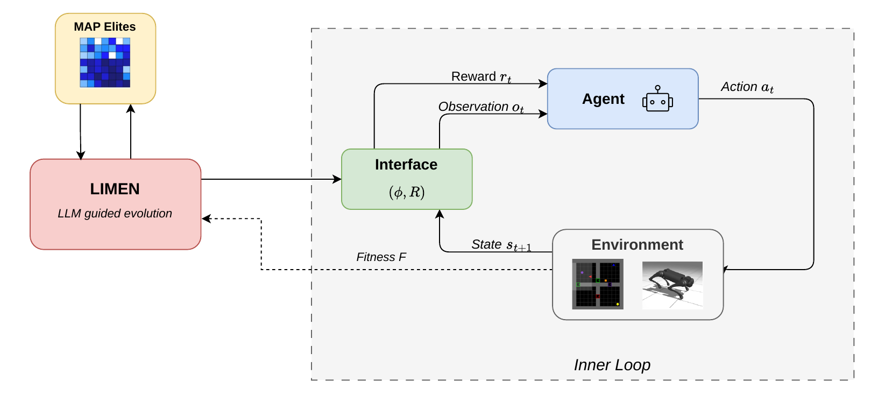
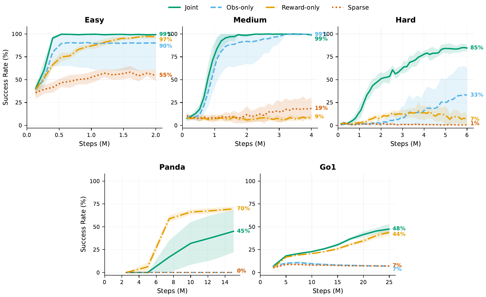
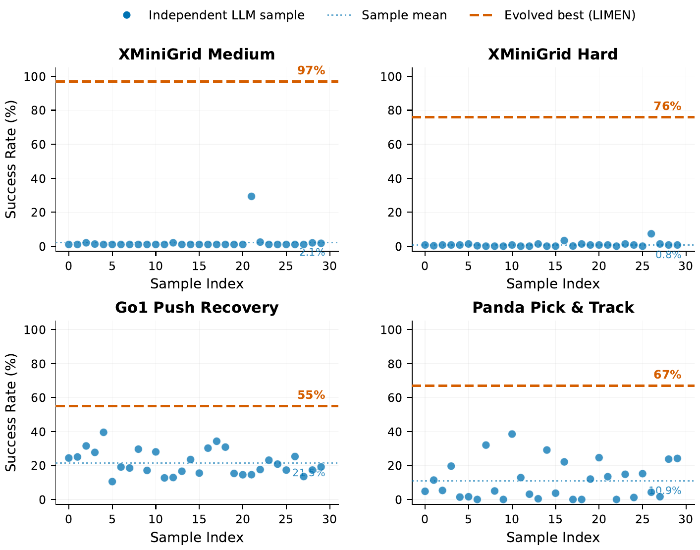

Reinforcement learning systems rely on environment interfaces that specify observations and reward functions, yet constructing these interfaces for new tasks often requires substantial manual effort. While recent work has automated reward design using large language models (LLMs), these approaches assume fixed observations and do not address the broader challenge of synthesizing complete task interfaces.
We propose LIMEN, an LLM-guided evolutionary framework that produces candidate interfaces as executable programs and iteratively refines them using policy training feedback. Across novel discrete gridworld tasks and continuous control domains spanning locomotion and manipulation, joint evolution of observations and rewards discovers effective interfaces given only a trajectory-level success metric, while optimizing either component alone fails on at least one domain.

The LIMEN loop. The LLM mutates a parent interface from the MAP-Elites archive, PPO trains and scores the resulting (φ, R), and the archive updates with the result.
We frame interface discovery as a bilevel problem. The outer loop searches over (φ, R) pairs to maximize a binary trajectory-level success metric; the inner loop is a fixed PPO trainer.
Each iteration:
30 iterations per run, one candidate per iteration. Total cost: 1–7 GPU hours and $3–11 in LLM calls per task on a single L4.

Success rate across the five tasks, averaged over 10 seeds. Reward-only collapses on the harder gridworld tasks; observation-only collapses on Panda; joint evolution is the only configuration that does not catastrophically fail in any domain.
Reward-only (the Eureka-style setup) collapses on Medium and Hard gridworld (19%, 7%). The LLM produces well-shaped rewards but the policy still cannot extract relational features from the default 7×7 patch. Observation-only fails completely on Panda (0%) for the symmetric reason: the raw state is informationally complete, but binary success provides no gradient. Joint evolution is the only configuration with non-trivial performance across all five tasks (99%, 99%, 85%, 45%, 48%).

30 i.i.d. samples from the LLM with no iterative feedback (dots) versus the best LIMEN-evolved interface (line). The LLM's prior alone cannot match the evaluate-and-refine loop.
30 independent samples from the same prompt average 0.8% (Hard), 2.1% (Medium), 10.9% (Panda), 21.5% (Go1) versus 76%, 97%, 67%, 55% with evolution. The LLM's prior is informative but not sufficient; the evaluate-and-refine loop discovers structural changes the LLM would not find on its own.
Across tasks the same motifs appear, the same ones experienced RL practitioners use by hand. Observations: relative geometric features, normalized distances, directional indicators, multi-scale encodings, explicit phase indicators, predictive features from state derivatives. Rewards: potential-based shaping via distance deltas, milestone bonuses for phase transitions, multi-scale Gaussians on tracking error, smoothness penalties.
def get_observation(state):
agent_y = state.agent.position[0] / (H - 1)
agent_x = state.agent.position[1] / (W - 1)
dir_oh = jax.nn.one_hot(state.agent.direction, 4)
pocket_tile = state.agent.pocket[0] / 12.0
pocket_color = state.agent.pocket[1] / 11.0
# Locate blue pyramid via grid mask scan
bp_mask = (grid[:, :, 0] == PYRAMID) & (grid[:, :, 1] == BLUE)
bp_y = jnp.sum(yy * bp_mask) / jnp.maximum(count, 1)
bp_x = jnp.sum(xx * bp_mask) / jnp.maximum(count, 1)
rel_y = (bp_y - agent_y_raw) / H
rel_x = (bp_x - agent_x_raw) / W
dist = jnp.abs(agent_y - bp_y) + jnp.abs(agent_x - bp_x)
# Directional indicators
bp_is_up = bp_y < agent_y
bp_is_down = bp_y > agent_y
bp_is_left = bp_x < agent_x
bp_is_right = bp_x > agent_x
# 7×7 egocentric local view
local_tiles = grid[rows, cols, 0] / 12.0
local_colors = grid[rows, cols, 1] / 11.0
local_is_bp = (tiles == PYRAMID) & (colors == BLUE)
return jnp.concatenate([agent_pos, dir_oh, pocket,
bp_pos, rel_offset, dist,
directional_indicators,
local_tiles, local_colors, local_is_bp]) # 174def compute_reward(state, action, next_state):
just_picked_up = holding_now & (~was_holding)
dist_before = abs(agent_y - bp_y) + abs(agent_x - bp_x)
dist_after = abs(next_agent_y - bp_y) + abs(next_agent_x - bp_x)
became_adjacent = (dist_after <= 1) & (dist_before > 1)
facing_pyramid = (front_tile == PYRAMID) & (front_color == BLUE)
reward = ( 10.0 * just_picked_up # task completion
+ 0.5 * (dist_before - dist_after) # approach shaping
+ 0.5 * became_adjacent # adjacency milestone
+ 1.0 * facing_pyramid # orientation bonus
- 0.005 ) # step penalty
return rewarddef get_observation(state):
agent_pos = [agent_y / (H - 1), agent_x / (W - 1)]
dir_oh = jax.nn.one_hot(state.agent.direction, 4)
holding_yp = (pocket[0] == PYRAMID) & (pocket[1] == YELLOW)
# Yellow pyramid & green square via mask scan
yp_mask = (grid[:, :, 0] == PYRAMID) & (grid[:, :, 1] == YELLOW)
gs_mask = (grid[:, :, 0] == SQUARE) & (grid[:, :, 1] == GREEN)
# Pairwise spatial relations
rel_agent_yp = (yp_pos - agent_pos) / H
rel_agent_gs = (gs_pos - agent_pos) / H
rel_yp_gs = (gs_pos - yp_pos) / H
dists = [dist_agent_yp, dist_agent_gs, dist_yp_gs]
# Task phase indicators
phase_pickup = (~holding_yp) & (~yp_adj_gs)
phase_carry = holding_yp
phase_done = yp_adj_gs & (~holding_yp)
# Best adjacent floor cell to green square
for d in range(4):
ny = clip(gs_y + DIRECTIONS[d, 0], 0, H - 1)
is_floor = (grid[ny, nx, 0] == FLOOR)
better = is_floor & (dist < best_dist)
best_adj = jnp.where(better, [ny, nx], best_adj)
local_grid = grid[agent-2:agent+3, :, :2] / [12, 11] # 5×5
return jnp.concatenate([agent_pos, dir_oh, obj_pos,
pairwise_rels, dists, phases,
best_adj, local_grid]) # 102def compute_reward(state, action, next_state):
just_picked_up = (~was_holding) & now_holding
just_succeeded = (~was_success) & now_adjacent
reward = ( 10.0 * just_succeeded # task success
+ 2.0 * just_picked_up # pickup milestone
+ 2.0 * delta_to_pyramid * (~holding) # phase 1: approach
+ 3.0 * delta_to_square * holding # phase 2: deliver
- 1.5 * placed_wrong_spot # wrong putdown
+ 3.0 * placed_adjacent # correct putdown
+ 2.0 * just_became_adj_to_square # adjacency milestone
+ 0.5 * ready_to_putdown ) # facing valid spot
return rewarddef get_observation(state):
agent_pos = [agent_y / (H - 1), agent_x / (W - 1)]
dir_oh = jax.nn.one_hot(state.agent.direction, 4)
holding_gb = (pocket[0] == BALL) & (pocket[1] == GREEN)
# Localize blue pyramid & yellow hex
bp_mask = (grid[:, :, 0] == PYRAMID) & (grid[:, :, 1] == BLUE)
yh_mask = (grid[:, :, 0] == HEX) & (grid[:, :, 1] == YELLOW)
# 4 neighbors of agent: [tile, color, is_pyr, is_hex,
# is_floor, adj_to_hex] per direction
for d in range(4):
...
# 4 neighbors of hex: [is_floor, rel_y, rel_x,
# dist_to_agent, at_this_cell]
for d in range(4):
...
# Best placement: closest floor tile adjacent to hex
for d in range(4):
is_floor = (grid[hex_y + dy, hex_x + dx, 0] == FLOOR)
best = jax.lax.select(is_floor & closer, ...)
# Phase-dependent navigation target
phase = [searching, holding, placed]
target = jax.lax.select(holding > 0.5, hex_pos, pyramid_pos)
local_grid = grid[agent-2:agent+3, :, :2] / [12, 11]
return jnp.concatenate([agent_pos, dir_oh, pocket,
bp_loc, hex_loc, neighbors, hex_neighbors,
best_placement, phase, target,
local_grid, ...]) # 147def compute_reward(state, action, next_state):
just_picked_up = (~was_holding) & now_holding_green_ball
ball_placed = was_holding & (~now_holding)
success = ball_placed & ball_adj_to_hex
reward = ( 20.0 * success # task completion
+ 5.0 * just_picked_up # pickup milestone
- 5.0 * (ball_placed & (~ball_adj_to_hex)) # wrong placement
+ 3.0 * delta_to_pyramid * (~holding) # phase 1 shaping
+ 3.0 * delta_to_hex * holding # phase 2 shaping
+ 1.5 * delta_to_best_placement * holding # placement guidance
+ 3.0 * just_reached_hex_adjacency # adjacency milestone
+ 0.5 * ready_to_putdown # facing valid spot
- 0.01 ) # step penalty
return rewardDEFAULT_POSE = jnp.array([0.1, 0.9, -1.8, ...]) # ×4 legs
def get_observation(state):
gravity = state.info["gravity"] # body-frame
gyro = state.info["gyro"] / 5.0
lin_vel = state.info["local_linvel"] / 3.0 # body-frame
# Multi-scale position encoding
pos_xy = state.info["pos_xy"]
pos_dist = jnp.linalg.norm(pos_xy)
pos_coarse = pos_xy / 1.0 # broad gradient
pos_fine = jnp.clip(pos_xy / 0.1, -5, 5) # sharp at origin
# Direction to origin in body frame
heading = state.info["heading"]
dir_world = -pos_xy / (pos_dist + 1e-6)
dir_body = jnp.array([
cos(-heading) * dir_world[0] - sin(-heading) * dir_world[1],
sin(-heading) * dir_world[0] + cos(-heading) * dir_world[1]])
# Stability indicators
up_z = state.info["upvector"][-1]
tilt_danger = jnp.maximum(0.0, 0.7 - up_z)
# Predictive: linear extrapolation 0.2s ahead
future_pos = pos_xy + state.data.qvel[:2] * 0.2
joint_dev = (qpos[7:] - DEFAULT_POSE) / pi
joint_vel = qvel[6:] / 15.0
push_force = state.info["push_force"] / 400.0
push_active = jnp.tanh(push_mag / 100.0)
actuator_force = state.data.actuator_force / 50.0
return jnp.concatenate([gravity, gyro, lin_vel,
pos_coarse, pos_fine, dir_body, tilt_danger,
joint_dev, joint_vel, push_force,
future_pos, ...]) # 98def compute_reward(state, action, next_state):
up_z = next_state.info["upvector"][-1]
pos_dist = jnp.linalg.norm(next_state.info["pos_xy"])
prev_dist = jnp.linalg.norm(state.info["pos_xy"])
# Uprightness (primary survival signal)
upright = 4.0 * up_z
upright_b = 10.0 * jnp.maximum(0, up_z - 0.8) ** 2
tilt_pen = -20.0 * jnp.maximum(0, 0.65 - up_z) ** 2
# Multi-scale position (NOT gated by uprightness)
position = 4.0 * (0.3 * jnp.exp(-pos_dist)
+ 0.4 * jnp.exp(-5 * pos_dist)
+ 0.3 * jnp.exp(-20 * pos_dist))
# Adaptive velocity: toward origin when far, still when near
far = jnp.tanh(pos_dist * 8.0)
vel_toward = jnp.dot(vel_xy, -pos_xy / (pos_dist + 1e-6))
vel_reward = far * jnp.tanh(vel_toward * 3) * 0.6
progress = 2.0 * jnp.clip((prev_dist - pos_dist) * 40, -1, 1)
fall_pen = -20.0 * (up_z < 0.3)
survival = 0.3
return (upright + upright_b + tilt_pen + position
+ progress + vel_reward + fall_pen + survival + ...)def get_observation(state):
arm_qpos = state.data.qpos[0:7] / jnp.pi # normalized
arm_qvel = state.data.qvel[0:7] / 2.0
gripper = state.info["gripper_pos"]
target = state.info["target_pos"]
error = target - gripper
# Multi-scale error normalization
error_fine = error / 0.02 # 2 cm scale
error_med = error / 0.05 # 5 cm scale
error_coarse = error / 0.15 # 15 cm scale
dist_feats = [dist/0.02, dist/0.05, dist/0.15]
# Target dynamics: analytical derivatives of Lissajous
target_vel = state.info["target_vel"] / 0.15
target_acc = -A * w**2 * sin(w * t + phi) / 0.03
target_jerk = -A * w**3 * cos(w * t + phi) / 0.05
# Trajectory phase encoding (sin / cos per axis)
phase_x = [sin(w_x*t + phi_x), cos(w_x*t + phi_x)]
phase_y = [sin(w_y*t + phi_y), cos(w_y*t + phi_y)]
phase_z = [sin(w_z*t), cos(w_z*t)]
# Multi-horizon future tracking errors
for dt in [0.04, 0.10, 0.20, 0.40, 0.80, 1.60]:
future_target = compute_lissajous(t + dt)
future_err = clip((future_target - gripper) / s, -5, 5)
ctrl_joint_err = (prev_ctrl - arm_qpos) / 0.3
vel_error_align = jnp.dot(target_vel, error_dir)
return jnp.concatenate([arm_qpos, arm_qvel,
error_fine, error_med, error_coarse, dist_feats,
target_vel, target_acc, target_jerk,
phase_x, phase_y, phase_z,
future_errs, ...]) # 94def compute_reward(state, action, next_state):
dist = next_state.info["gripper_target_dist"]
# Multi-scale Gaussian: precise near 2 cm threshold
tight = jnp.exp(-0.5 * (dist / 0.02) ** 2)
medium = jnp.exp(-0.5 * (dist / 0.05) ** 2)
coarse = jnp.exp(-0.5 * (dist / 0.15) ** 2)
tracking = 0.6 * tight + 0.3 * medium + 0.1 * coarse
# Velocity alignment: reward moving with target
error_dir = error / (jnp.linalg.norm(error) + 1e-6)
dist_weight = jnp.clip(dist / 0.05, 0, 1)
vel_bonus = 0.05 * jnp.dot(error_dir, target_vel_dir) * dist_weight
ctrl_pen = -0.002 * jnp.linalg.norm(ctrl_change)
act_pen = -0.001 * jnp.linalg.norm(action[:7])
return tracking + vel_bonus + ctrl_pen + act_penClick each tab to see the evolved (φ, R) for that task. Snippets simplified for readability; full programs in the paper appendix.
@misc{jaswal2026discoveringreinforcementlearninginterfaces,
title={Discovering Reinforcement Learning Interfaces with Large Language Models},
author={Akshat Singh Jaswal and Ashish Baghel and Paras Chopra},
year={2026},
eprint={2605.03408},
archivePrefix={arXiv},
primaryClass={cs.LG},
url={https://arxiv.org/abs/2605.03408},
}